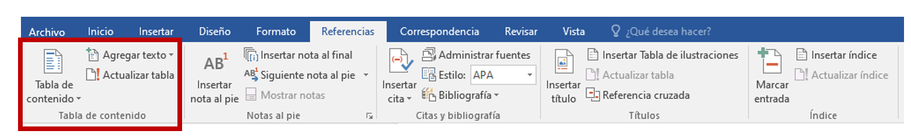
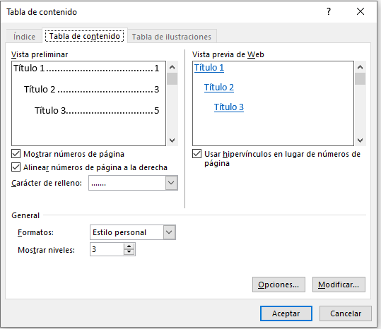
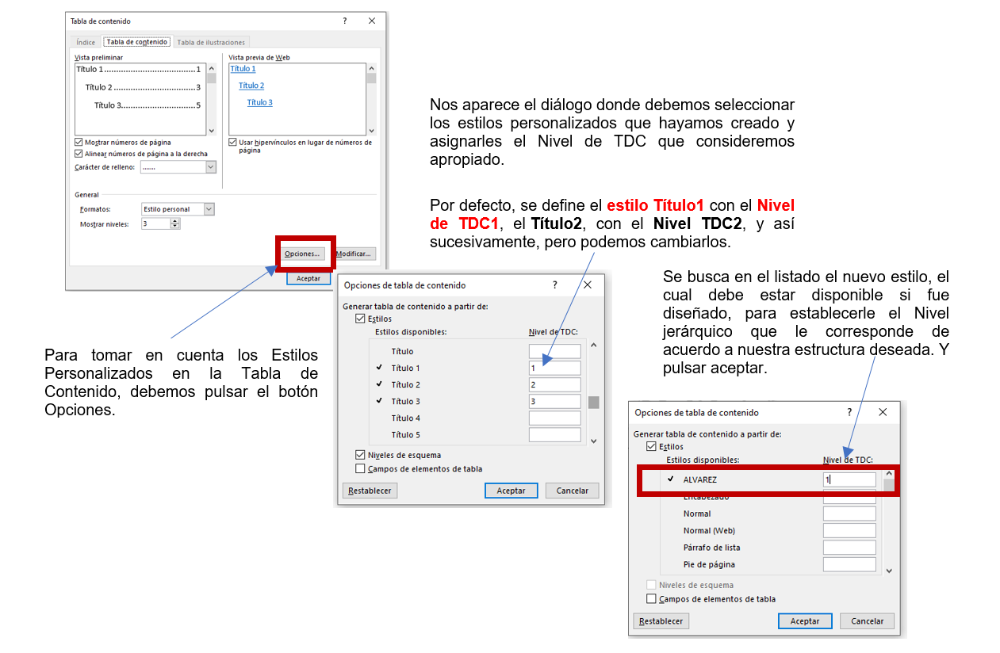
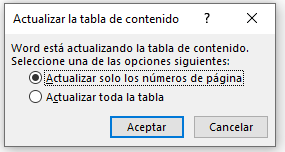

Una Tabla de Contenido es un reflejo de la estructura de un documento, suele figurar al principio de éste y contiene los títulos de los temas y subtemas que lo conforman. Puede contener o no el número de página y puede establecerse un enlace directo a los puntos contenidos en la tabla. Si se le determinan a los títulos del documento un formato que incluya los niveles jerárquicos, es fácil construir la tabla de contenido.

.
CREAR TABLA DE CONTENIDO
Para crear una tabla de contenidos debemos seguir dos pasos:
1.- Marcar los títulos que deseamos que aparezcan en la tabla de contenidos, mediante los estilos predefinidos. Word dispone de Estilos de títulos predefinidos que incluyen niveles de esquema (Título1, Título2, Título3, etc.). Pueden utilizarse esos, o crear algunos Estilos Personalizados, tal como se comentó previamente en este mismo material.
2.- Generar la tabla de contenidos (TDC). Cuando estén definidos los elementos que formarán la tabla de contenido, debemos colocarnos en el lugar donde queramos insertar la tabla de contenidos e ir a la pestaña Referencias - Tabla de contenido.

Word dispone de dos modelos de Tablas automáticas que generarán una tabla de contenidos de forma instantánea, con el estilo que tiene predefinido.
Eligiendo Tabla manual, nos ofrece una estructura de muestra para sustituir los datos.
Además de esas opciones, tenemos la posibilidad de crear una tabla de contenido personalizada, donde aparecerá el siguiente cuadro de diálogo.

En Formatos se puede escoger de diversos estilos de presentación y en vista preliminar podemos ver el resultado del estilo seleccionado. Se pueden seleccionar otras opciones como Mostrar números de página, Alinear números de página a la derecha o si queremos usar hipervínculos en lugar de número de página.
Al dar clic al botón aceptar, Word determinará la Tabla de Contenido (TDC) automáticamente con aquellos textos a los que se le otorgaron los Estilos Título1, Título2 , Titulo3. Si no se ha establecido ningún Estilo en el documento, no se podrá visualizar la Tabla de Contenido. Además, si se han creado estilos de títulos personalizados, debemos hacer que Word los tenga en cuenta cuando generemos la TDC.

.
ACTUALIZAR TABLA DE CONTENIDO
Si una vez creada la TDC modificamos el documento añadiendo o eliminando títulos, se puede actualizar de dos formas:
- Desde la pestaña Referencias disponemos del botón
.
- Haciendo clic con el botón derecho sobre la TDC disponemos de un menú emergente donde encontraremos la opción Actualizar campos.
Por cualquiera de estas opciones aparece el cuadro de diálogo Actualizar la tabla de contenido en él indicaremos si deseamos actualizar sólo los números de página o toda la tabla.
L..